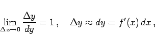

Inhalt Index DeskTop Bronstein

 Differentialrechnung Differentiation von Funktionen von mehreren Veränderlichen Partielle Ableitungen
Differentialrechnung Differentiation von Funktionen von mehreren Veränderlichen Partielle Ableitungen


|  | (6.39) |
die es gestattet, die Berechnung kleiner Zuwächse  (Inkremente) auf die Berechnung ihres Differentials zurückzuführen.
(Inkremente) auf die Berechnung ihres Differentials zurückzuführen.
Bei näherungsweisen Berechnungen, z.B. gemäß Mittelwertsatz der Differentialrechnung oder mit Fehlerfortpflanzungsgesetz wird davon Gebrauch gemacht.